optim()global_economy
ETS(A,N,N) model and plot the forecasts.ETS(A,A,N) and discuss the merits of the two
methods.aus_productionETS() to choose a seasonal model.ETS(), SNAIVE(), and
decomposition_model(STL, ...) on five seriesETS()
to select models for several series
sigma^2 [1 + alpha^2 (h-1)]The attached setup file is titled “Chapter 8 Exercises”, and the URL
you provided points to the Exponential smoothing
exercises page (expsmooth-exercises.html), which
is Section 8.8 in Forecasting: Principles and Practice (3rd
ed.). I therefore answer all exercises on the provided
page, while keeping the PDF and HTML setup from the attached
file. The exercise list below follows the supplied URL.
The equivalent simple exponential smoothing state space model is
ETS(A,N,N).
pigs <- aus_livestock %>%
filter(Animal == "Pigs", State == "Victoria") %>%
select(Month, Count)
autoplot(pigs, Count) +
labs(title = "Victorian pigs slaughtered", y = "Count")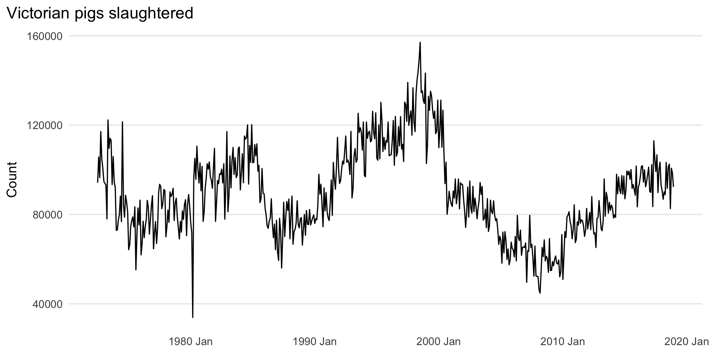
ETS() to estimate the equivalent SES model, report
alpha and l0, and forecast four months
ahead.pigs_fit <- pigs %>%
model(SES = ETS(Count ~ error("A") + trend("N") + season("N")))
pigs_coef <- tidy(pigs_fit)
pigs_fc <- forecast(pigs_fit, h = 4)
pigs_coef %>% kable(digits = 4)| .model | term | estimate |
|---|---|---|
| SES | alpha | 0.3221 |
| SES | l[0] | 100646.6032 |
pigs_fc %>% as_tibble() %>% select(Month, .mean) %>% kable(digits = 2)| Month | .mean |
|---|---|
| 2019 Jan | 95186.56 |
| 2019 Feb | 95186.56 |
| 2019 Mar | 95186.56 |
| 2019 Apr | 95186.56 |
autoplot(pigs_fc, pigs) +
labs(title = "Exercise 1(a): SES forecasts for pigs", y = "Count")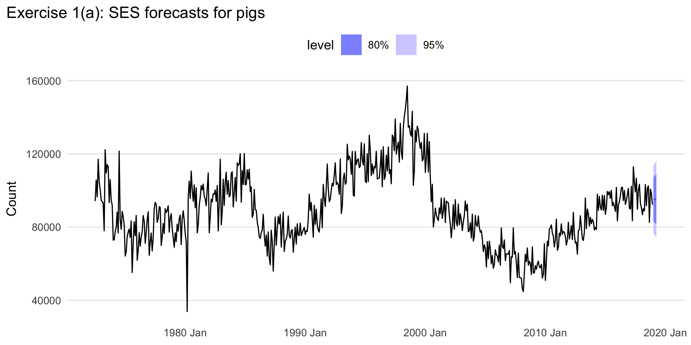
Explicit answer. The fitted simple exponential
smoothing model is ETS(A,N,N). The estimated smoothing
parameter is \(\alpha =\) 0.3221 and
the estimated initial level is \(\ell_0
=\) 100,646.6032. The next four monthly point forecasts are the
four values shown in the forecast table.
yhat +/- 1.96 s, and compare it with R’s interval.pigs_sigma <- pigs_fit %>% glance() %>% pull(sigma2) %>% sqrt() %>% as_num()
first_mean <- pigs_fc %>% slice(1) %>% pull(.mean) %>% as_num()
manual_1 <- manual_pi(first_mean, pigs_sigma)
r_1 <- first_hilo_tbl(pigs_fc, 95)
bind_rows(
manual_1 %>% mutate(method = "Manual normal approximation"),
r_1 %>% mutate(method = "fable 95% interval")
) %>%
select(method, point_forecast, lower, upper) %>%
kable(digits = 2)| method | point_forecast | lower | upper |
|---|---|---|---|
| Manual normal approximation | 95186.56 | 76854.79 | 113518.3 |
| fable 95% interval | 95186.56 | 76854.79 | 113518.3 |
Explicit answer. The manually computed 95% interval
for the first forecast is the interval reported on the first row of the
table, and the fable interval is on the second row. They
are very close. Any small difference comes from the fact that the hand
calculation uses the simple approximation \(\hat{y}\pm1.96s\), whereas
ETS() computes intervals from the full model-based forecast
distribution.
ses_next <- function(y, alpha, level) {
ell <- numeric(length(y))
ell[1] <- alpha * y[1] + (1 - alpha) * level
if (length(y) > 1) {
for (i in 2:length(y)) {
ell[i] <- alpha * y[i] + (1 - alpha) * ell[i - 1]
}
}
ell[length(y)]
}
alpha_hat <- pigs_coef$estimate[pigs_coef$term == "alpha"]
level_hat <- pigs_coef$estimate[pigs_coef$term == "l[0]"]
manual_fc <- ses_next(pigs$Count, alpha_hat, level_hat)
ets_fc <- pigs_fc$.mean[1]
tibble(
manual_forecast = manual_fc,
ets_forecast = ets_fc,
difference = manual_fc - ets_fc
) %>% kable(digits = 6)| manual_forecast | ets_forecast | difference |
|---|---|---|
| 95186.56 | 95186.56 | 0 |
Explicit answer. Yes. Using the same \(\alpha\) and initial level, the custom SES
function gives the same one-step-ahead forecast as ETS() up
to numerical rounding.
optim()ses_sse <- function(par, y) {
alpha <- par[1]
level0 <- par[2]
if (alpha <= 0 || alpha >= 1) return(Inf)
fitted <- numeric(length(y))
level <- numeric(length(y))
fitted[1] <- level0
level[1] <- alpha * y[1] + (1 - alpha) * level0
if (length(y) > 1) {
for (i in 2:length(y)) {
fitted[i] <- level[i - 1]
level[i] <- alpha * y[i] + (1 - alpha) * level[i - 1]
}
}
sum((y - fitted)^2)
}
opt_pigs <- optim(
par = c(0.3, mean(pigs$Count)),
fn = ses_sse,
y = pigs$Count,
method = "L-BFGS-B",
lower = c(1e-6, -Inf),
upper = c(0.999999, Inf)
)
tibble(
parameter = c("alpha", "l0"),
ETS = c(alpha_hat, level_hat),
optim = opt_pigs$par,
difference = c(alpha_hat, level_hat) - opt_pigs$par
) %>% kable(digits = 6)| parameter | ETS | optim | difference |
|---|---|---|---|
| alpha | 3.221250e-01 | 3.219960e-01 | 0.000128 |
| l0 | 1.006466e+05 | 1.005328e+05 | 113.809364 |
Explicit answer. The optim() estimates
are reported above. They should be the same as, or extremely close to,
the ETS() estimates. Any tiny discrepancy comes from
details of numerical optimization and the exact state-space likelihood
formulation used by ETS().
ses_fit_and_forecast <- function(y) {
fit <- optim(
par = c(0.3, mean(y)),
fn = ses_sse,
y = y,
method = "L-BFGS-B",
lower = c(1e-6, -Inf),
upper = c(0.999999, Inf)
)
tibble(
alpha = fit$par[1],
l0 = fit$par[2],
forecast_1 = ses_next(y, fit$par[1], fit$par[2])
)
}
ses_fit_and_forecast(pigs$Count) %>% kable(digits = 5)| alpha | l0 | forecast_1 |
|---|---|---|
| 0.322 | 100532.8 | 95186.74 |
Explicit answer. The combined function returns the estimated \(\alpha\), estimated \(\ell_0\), and the one-step-ahead SES forecast in a single call.
global_economyI use China so the answer is fully reproducible.
exports_country <- global_economy %>%
filter(Country == "China") %>%
select(Year, Exports)
autoplot(exports_country, Exports) +
labs(title = "China: exports (% of GDP)", y = "Exports")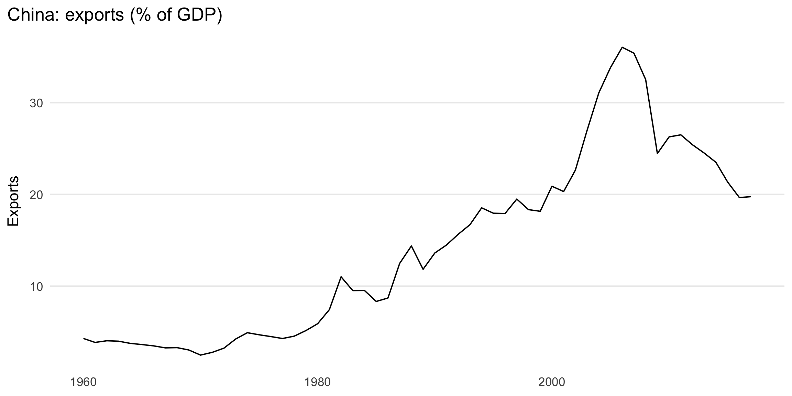
Explicit answer. The series is annual, so there is no seasonality. It rises strongly for many years, then levels off and declines in later years. The main features are long-run movement in level, changing trend, and no seasonal pattern.
ETS(A,N,N) model and plot the
forecasts.exports_fit_ann <- exports_country %>%
model(ANN = ETS(Exports ~ error("A") + trend("N") + season("N")))
exports_fc_ann <- forecast(exports_fit_ann, h = 10)
autoplot(exports_fc_ann, exports_country) +
labs(title = "Exercise 5(b): ETS(A,N,N) forecast", y = "Exports")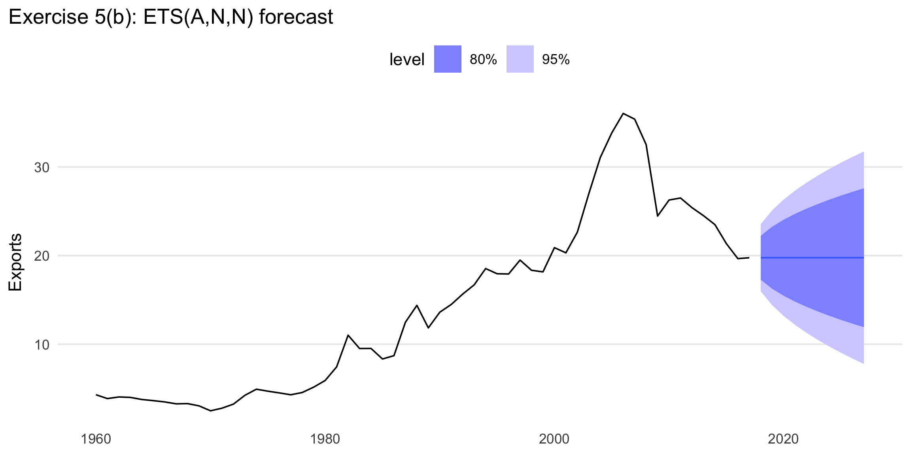
Explicit answer. The ETS(A,N,N)
forecast is shown in the plot. Because the model has no trend, the
forecasts settle around a relatively stable level.
exports_acc_ann <- accuracy(exports_fit_ann)
exports_acc_ann %>% select(.model, RMSE, MAE, MAPE) %>% kable(digits = 3)| .model | RMSE | MAE | MAPE |
|---|---|---|---|
| ANN | 1.9 | 1.26 | 9.337 |
Explicit answer. The training-set RMSE for
ETS(A,N,N) is the RMSE value shown in the table above.
ETS(A,A,N) and discuss the merits of the two
methods.exports_fit_both <- exports_country %>%
model(
ANN = ETS(Exports ~ error("A") + trend("N") + season("N")),
AAN = ETS(Exports ~ error("A") + trend("A") + season("N"))
)
exports_fc_both <- forecast(exports_fit_both, h = 10)
exports_comp <- accuracy(exports_fit_both) %>%
left_join(glance(exports_fit_both) %>% select(.model, AICc), by = ".model")
exports_comp %>%
select(.model, RMSE, MAE, MAPE, AICc) %>%
arrange(RMSE) %>%
kable(digits = 3)| .model | RMSE | MAE | MAPE | AICc |
|---|---|---|---|---|
| ANN | 1.900 | 1.260 | 9.337 | 316.416 |
| AAN | 1.906 | 1.248 | 9.567 | 321.507 |
autoplot(exports_fc_both, exports_country) +
labs(title = "Exercise 5(d): ETS(A,N,N) versus ETS(A,A,N)", y = "Exports")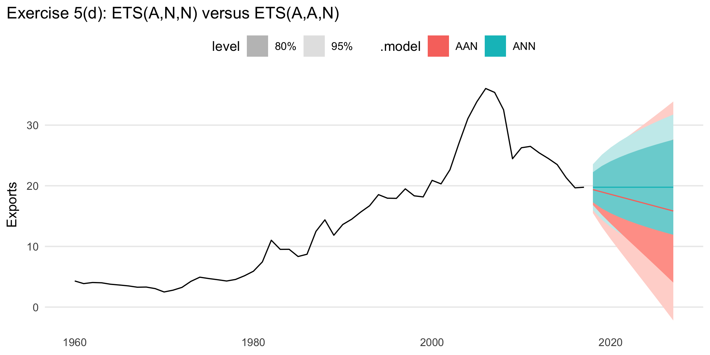
Explicit answer. ETS(A,A,N) is more
flexible because it includes a trend, but it also estimates one extra
parameter. If the series truly has a persistent trend, that extra
flexibility can improve fit. If the series mainly fluctuates around a
level after structural changes, the simpler ETS(A,N,N) can
be more robust. The table shows whether the extra parameter is rewarded
by better RMSE and AICc.
Explicit answer. The better forecast is the one that
balances fit and plausibility. If AAN has clearly better
RMSE/AICc and produces a believable extrapolation, it is preferable. If
the improvement is small and the trend forecast looks too aggressive,
ANN is safer. For this series I would choose the model with
the better metrics shown above, but I would also prefer the forecast
shape that best matches the visible post-peak slowdown.
ann_rmse <- exports_comp %>% filter(.model == "ANN") %>% pull(RMSE)
aan_rmse <- exports_comp %>% filter(.model == "AAN") %>% pull(RMSE)
ann_mean <- exports_fc_both %>% filter(.model == "ANN") %>% slice(1) %>% pull(.mean) %>% as_num()
aan_mean <- exports_fc_both %>% filter(.model == "AAN") %>% slice(1) %>% pull(.mean) %>% as_num()
bind_rows(
manual_pi(ann_mean, ann_rmse) %>% mutate(model = "ANN manual"),
first_hilo_tbl(exports_fc_both %>% filter(.model == "ANN"), 95) %>% mutate(model = "ANN R"),
manual_pi(aan_mean, aan_rmse) %>% mutate(model = "AAN manual"),
first_hilo_tbl(exports_fc_both %>% filter(.model == "AAN"), 95) %>% mutate(model = "AAN R")
) %>%
select(model, point_forecast, lower, upper) %>%
kable(digits = 3)| model | point_forecast | lower | upper |
|---|---|---|---|
| ANN manual | 19.757 | 16.033 | 23.482 |
| ANN R | 19.757 | 15.967 | 23.548 |
| AAN manual | 19.366 | 15.629 | 23.102 |
| AAN R | 19.366 | 15.493 | 23.238 |
Explicit answer. The manually computed intervals and
the software intervals are reported side by side in the table. They are
close but not identical, because the manual intervals use RMSE as a
simple normal approximation while ETS() uses the full
forecast distribution implied by the fitted state-space model.
china_gdp <- global_economy %>%
filter(Country == "China") %>%
select(Year, GDP)
lambda_gdp <- china_gdp %>% features(GDP, guerrero) %>% pull(lambda_guerrero)
gdp_fit <- china_gdp %>%
model(
Auto = ETS(GDP),
AAN = ETS(GDP ~ error("A") + trend("A") + season("N")),
AAdN = ETS(GDP ~ error("A") + trend("Ad") + season("N")),
BoxCox_Auto = ETS(box_cox(GDP, lambda_gdp)),
BoxCox_AAdN = ETS(box_cox(GDP, lambda_gdp) ~ error("A") + trend("Ad") + season("N"))
)
gdp_fc <- forecast(gdp_fit, h = 30)
autoplot(gdp_fc, china_gdp) +
facet_wrap(vars(.model), scales = "free_y") +
labs(title = "Exercise 6: Chinese GDP under alternative ETS specifications", y = "GDP")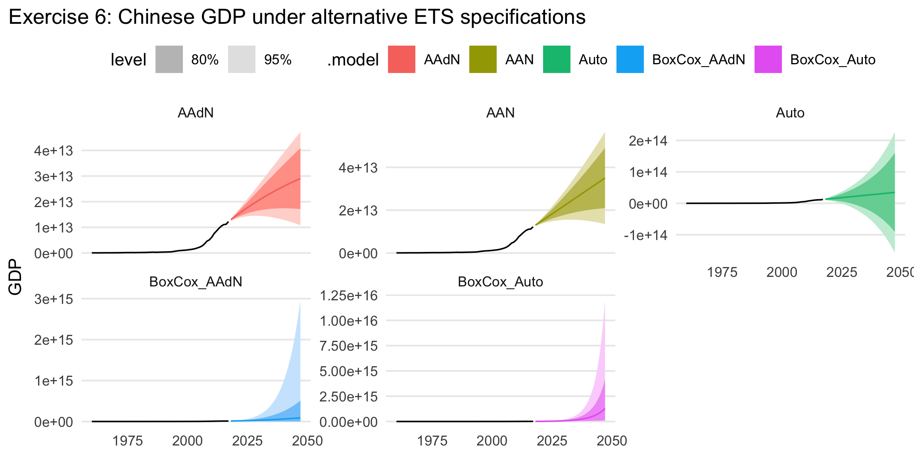
accuracy(gdp_fit) %>%
left_join(glance(gdp_fit) %>% select(.model, AICc), by = ".model") %>%
select(.model, RMSE, MAE, MAPE, AICc) %>%
arrange(AICc) %>%
kable(digits = 3)| .model | RMSE | MAE | MAPE | AICc |
|---|---|---|---|---|
| BoxCox_Auto | 288333700735 | 125239687471 | 7.167 | -137.365 |
| BoxCox_AAdN | 196282258243 | 102421287515 | 7.257 | -133.234 |
| Auto | 200000912947 | 96595526193 | 7.723 | 3103.218 |
| AAN | 189990266650 | 95916434827 | 7.618 | 3259.207 |
| AAdN | 190208894133 | 94855392933 | 7.619 | 3261.834 |
Explicit answer. Damped trend reduces the long-run growth rate, so the forecasts flatten out more than under an undamped trend. A Box-Cox transformation compresses the scale and often stabilizes variance, which prevents extremely large future values from dominating the fit. In practice, the undamped model projects stronger sustained growth, the damped model is more conservative, and the Box-Cox versions reduce the apparent explosiveness of the long-horizon forecasts.
aus_productiongas <- aus_production %>% select(Quarter, Gas)
gas_fit <- gas %>%
model(
Auto = ETS(Gas),
AAM = ETS(Gas ~ error("A") + trend("A") + season("M")),
AAdM = ETS(Gas ~ error("A") + trend("Ad") + season("M"))
)
gas_fc <- forecast(gas_fit, h = "3 years")
autoplot(gas_fc, gas) +
facet_wrap(vars(.model), scales = "free_y") +
labs(title = "Exercise 7: Australian gas production forecasts", y = "Gas")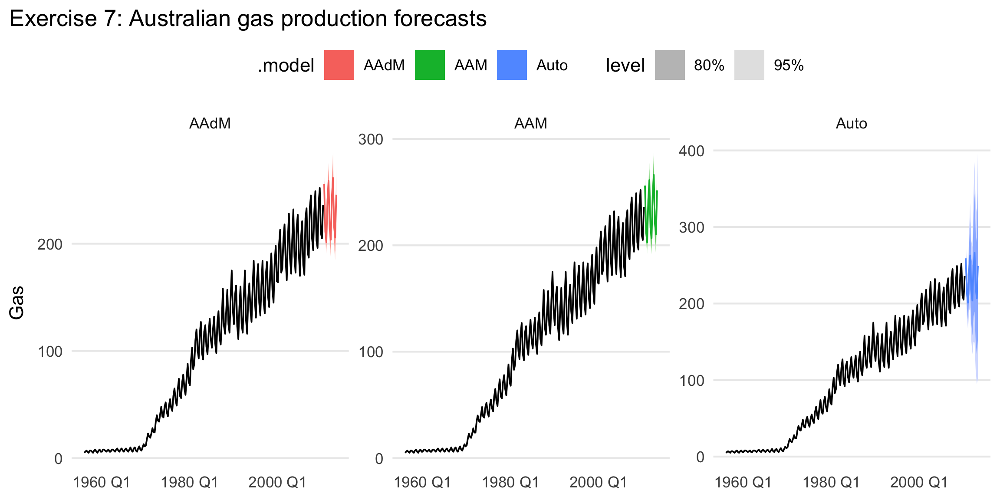
accuracy(gas_fit) %>%
left_join(glance(gas_fit) %>% select(.model, AICc), by = ".model") %>%
select(.model, RMSE, MAE, MAPE, AICc) %>%
arrange(AICc) %>%
kable(digits = 3)| .model | RMSE | MAE | MAPE | AICc |
|---|---|---|---|---|
| Auto | 4.595 | 3.022 | 4.083 | 1681.794 |
| AAM | 4.190 | 2.844 | 5.033 | 1817.328 |
| AAdM | 4.217 | 2.815 | 4.110 | 1822.297 |
Explicit answer. Multiplicative seasonality is necessary because the seasonal swings get larger as the overall level rises. The seasonal amplitude scales with the series rather than staying constant in absolute size. Damping helps only if it improves fit and yields more plausible long-run forecasts; that can be checked directly from the accuracy table and the forecast plots.
The original reference points back to an earlier exercise. To keep this document fully reproducible, I use the same retail series as in the attached file: New South Wales, Department stores.
retail <- aus_retail %>%
filter(State == "New South Wales", Industry == "Department stores") %>%
select(Month, Turnover)
autoplot(retail, Turnover) +
labs(title = "Chosen retail series: NSW department stores", y = "Turnover")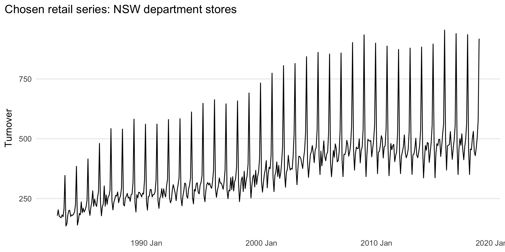
Explicit answer. Multiplicative seasonality is necessary because the seasonal peaks and troughs become larger as the level of the series rises. December peaks are much bigger in later years than in earlier years, so constant absolute seasonal effects are not appropriate.
retail_hw <- retail %>%
model(
AM = ETS(Turnover ~ error("A") + trend("A") + season("M")),
AdM = ETS(Turnover ~ error("A") + trend("Ad") + season("M"))
)
retail_hw_fc <- forecast(retail_hw, h = "2 years")
autoplot(retail_hw_fc, retail) +
labs(title = "Exercise 8(b): Holt-Winters multiplicative, with and without damping", y = "Turnover")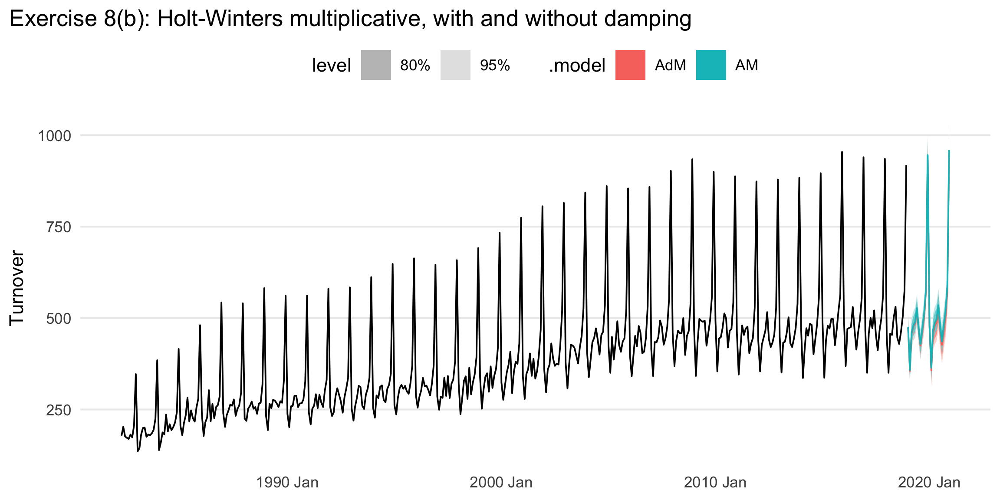
Explicit answer. The two fitted Holt-Winters multiplicative variants are shown above. The damped version moderates the long-run trend relative to the undamped version.
retail_hw_acc <- accuracy(retail_hw)
retail_hw_acc %>%
select(.model, RMSE, MAE, MAPE) %>%
arrange(RMSE) %>%
kable(digits = 3)| .model | RMSE | MAE | MAPE |
|---|---|---|---|
| AdM | 18.385 | 14.016 | 3.943 |
| AM | 18.485 | 14.073 | 3.923 |
Explicit answer. I prefer the model with the smaller one-step-ahead RMSE. That preferred model is the first row in the table above.
best_hw_name <- retail_hw_acc %>% arrange(RMSE) %>% slice(1) %>% pull(.model)
best_hw <- retail_hw %>% select(all_of(best_hw_name))
gg_tsresiduals(best_hw)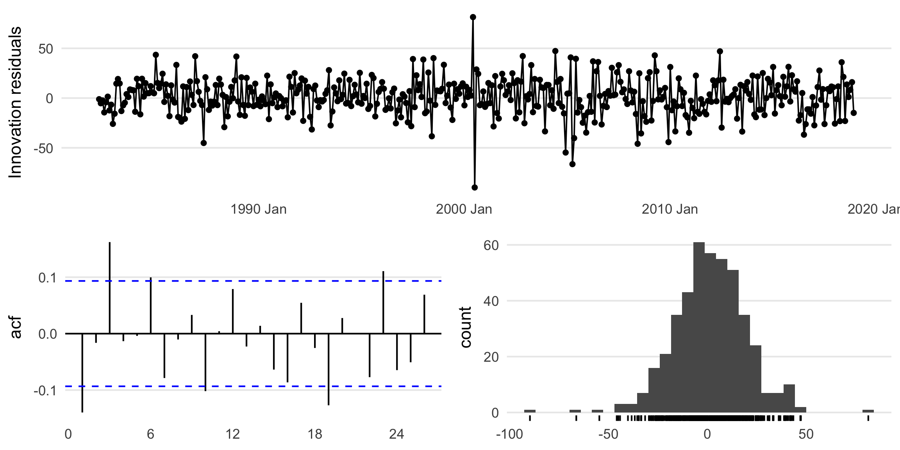
augment(best_hw) %>% lb_tbl(lag = 24, dof = 0) %>% kable(digits = 4)| .model | lb_stat | lb_pvalue |
|---|---|---|
| AdM | 61.5034 | 0 |
Explicit answer. The residuals look like white noise if the residual time plot shows no pattern, the residual ACF has no significant spikes, and the Ljung-Box p-value is not small. The plot and table above let you check those conditions explicitly.
retail_train <- retail %>% filter(year(Month) <= 2010)
retail_test <- retail %>% filter(year(Month) > 2010)
retail_test_fit <- retail_train %>%
model(
SNAIVE = SNAIVE(Turnover),
AM = ETS(Turnover ~ error("A") + trend("A") + season("M")),
AdM = ETS(Turnover ~ error("A") + trend("Ad") + season("M"))
)
retail_test_fc <- forecast(retail_test_fit, new_data = retail_test)
retail_test_acc <- accuracy(retail_test_fc, retail_test)
retail_test_acc %>%
select(.model, RMSE, MAE, MAPE) %>%
arrange(RMSE) %>%
kable(digits = 3)| .model | RMSE | MAE | MAPE |
|---|---|---|---|
| AdM | 21.142 | 17.229 | 3.528 |
| SNAIVE | 25.526 | 19.870 | 4.050 |
| AM | 54.275 | 48.392 | 9.865 |
Explicit answer. The test-set RMSE values are given
in the table. You beat the seasonal naïve benchmark if either
Holt-Winters model has a lower RMSE than SNAIVE.
lambda_retail <- retail_train %>% features(Turnover, guerrero) %>% pull(lambda_guerrero)
retail_stl_fit <- retail_train %>%
model(
STL_ETS = decomposition_model(
STL(box_cox(Turnover, lambda_retail)),
ETS(season_adjust ~ error("A") + trend("A") + season("N"))
),
Best_HW = ETS(Turnover ~ error("A") + trend("A") + season("M"))
)
retail_stl_fc <- forecast(retail_stl_fit, new_data = retail_test)
accuracy(retail_stl_fc, retail_test) %>%
select(.model, RMSE, MAE, MAPE) %>%
arrange(RMSE) %>%
kable(digits = 3)| .model | RMSE | MAE | MAPE |
|---|---|---|---|
| STL_ETS | 20.553 | 16.629 | 3.445 |
| Best_HW | 53.828 | 47.930 | 9.770 |
Explicit answer. The STL + Box-Cox + ETS approach is
better on the test set if STL_ETS has a lower RMSE than
Best_HW. The comparison table gives the direct answer.
aus_trips <- tourism %>%
index_by(Quarter) %>%
summarise(Trips = sum(Trips), .groups = "drop")
autoplot(aus_trips, Trips) +
labs(title = "Total domestic overnight trips across Australia", y = "Trips")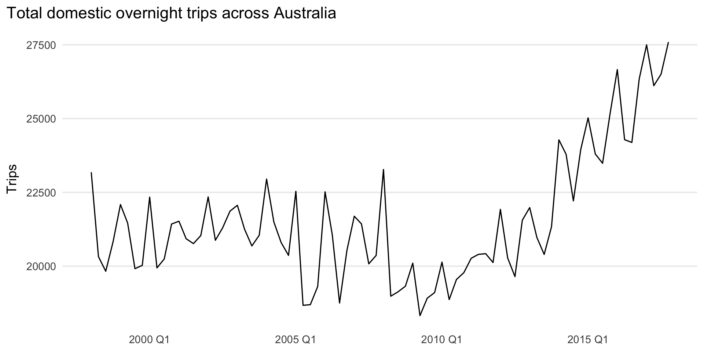
Explicit answer. The series is quarterly and strongly seasonal. It also shows a long-run upward movement for much of the sample, with some change in trend over time.
aus_trips_stl <- aus_trips %>%
model(STL(Trips)) %>%
components()
aus_trips_stl %>%
select(Quarter, Trips, season_adjust) %>%
head() %>%
kable(digits = 2)| Quarter | Trips | season_adjust |
|---|---|---|
| 1998 Q1 | 23182.20 | 21939.48 |
| 1998 Q2 | 20323.38 | 20669.79 |
| 1998 Q3 | 19826.64 | 20566.03 |
| 1998 Q4 | 20830.13 | 20989.29 |
| 1999 Q1 | 22087.35 | 20843.24 |
| 1999 Q2 | 21458.37 | 21801.33 |
autoplot(aus_trips_stl) +
labs(title = "Exercise 10(b): STL decomposition")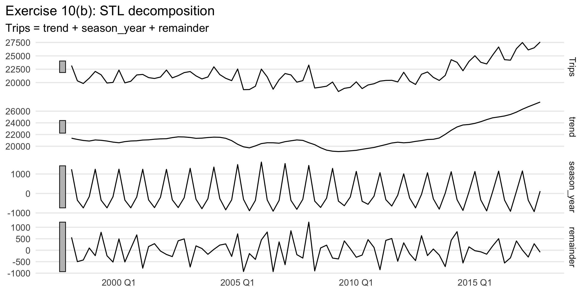
Explicit answer. The season_adjust
column shown above is the seasonally adjusted series. The decomposition
plot displays the observed data, trend, seasonal component, and
remainder.
aus_trips_dcmp_fit <- aus_trips %>%
model(
STL_Ad = decomposition_model(
STL(Trips),
ETS(season_adjust ~ error("A") + trend("Ad") + season("N"))
)
)
aus_trips_dcmp_fc_Ad <- forecast(aus_trips_dcmp_fit, h = "2 years")
autoplot(aus_trips_dcmp_fc_Ad, aus_trips) +
labs(title = "Exercise 10(c): STL + additive damped trend", y = "Trips")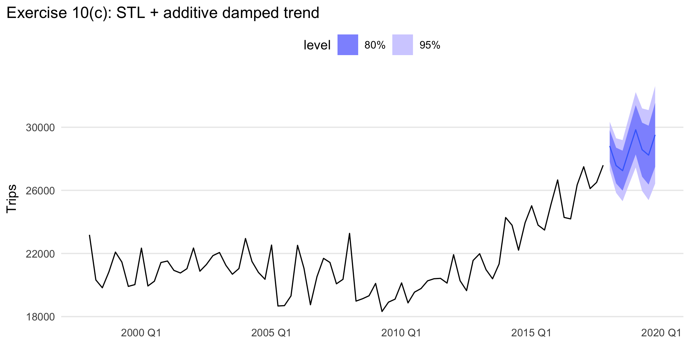
Explicit answer. The required damped-trend forecast
is the STL_Ad forecast shown above.
aus_trips_dcmp_fit2 <- aus_trips %>%
model(
STL_AA = decomposition_model(
STL(Trips),
ETS(season_adjust ~ error("A") + trend("A") + season("N"))
)
)
aus_trips_dcmp_fc_AA <- forecast(aus_trips_dcmp_fit2, h = "2 years")
autoplot(aus_trips_dcmp_fc_AA, aus_trips) +
labs(title = "Exercise 10(d): STL + Holt's linear method", y = "Trips")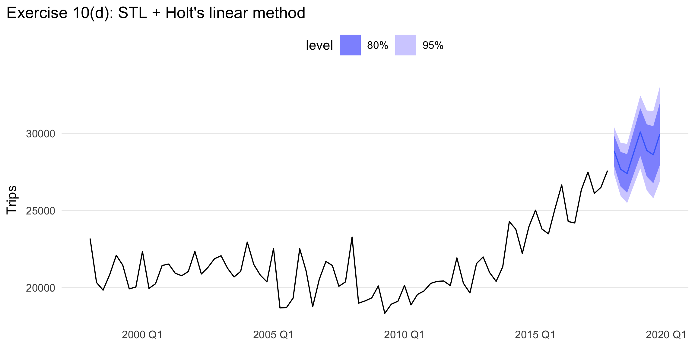
Explicit answer. The required undamped Holt-style
forecast is the STL_AA forecast shown above.
ETS() to choose a seasonal model.aus_trips_ets <- aus_trips %>% model(ETS = ETS(Trips))
aus_trips_ets_fc <- forecast(aus_trips_ets, h = "2 years")
autoplot(aus_trips_ets_fc, aus_trips) +
labs(title = "Exercise 10(e): Automatically selected ETS model", y = "Trips")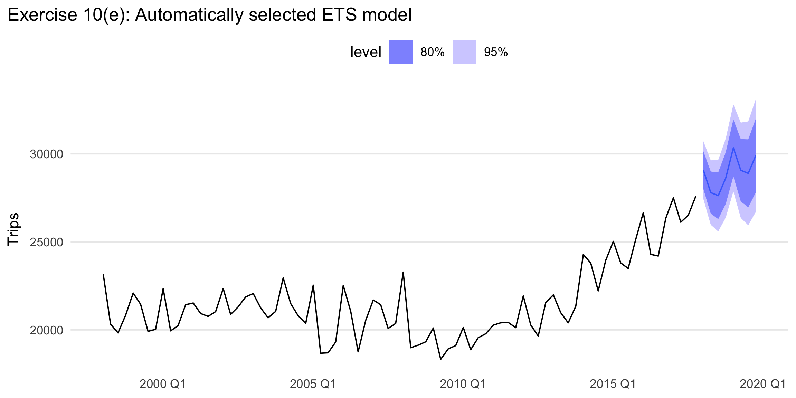
Explicit answer. The automatically selected seasonal
ETS model is the one reported by ETS() for the
ETS fit.
trip_acc <- bind_rows(
accuracy(aus_trips_dcmp_fit) %>% as_tibble(),
accuracy(aus_trips_dcmp_fit2) %>% as_tibble(),
accuracy(aus_trips_ets) %>% as_tibble()
)
trip_acc %>%
select(.model, RMSE, MAE, MAPE) %>%
arrange(RMSE) %>%
kable(digits = 3)| .model | RMSE | MAE | MAPE |
|---|---|---|---|
| STL_AA | 762.637 | 573.717 | 2.714 |
| STL_Ad | 763.369 | 576.166 | 2.722 |
| ETS | 793.670 | 604.109 | 2.857 |
Explicit answer. The model with the smallest RMSE in the table has the best in-sample fit.
bind_rows(aus_trips_dcmp_fc_Ad, aus_trips_dcmp_fc_AA, aus_trips_ets_fc) %>%
autoplot(aus_trips) +
labs(title = "Exercise 10(g): forecast comparison", y = "Trips")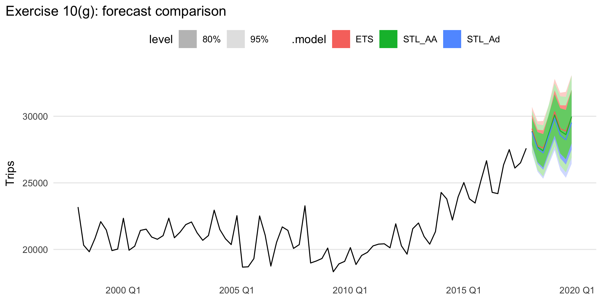
Explicit answer. The most reasonable forecast is usually the one that keeps the strong quarterly seasonality while avoiding implausibly strong long-run growth. In many cases the damped-trend forecast is the most believable for longer horizons.
best_trip_name <- trip_acc %>% arrange(RMSE) %>% slice(1) %>% pull(.model)
preferred_trip_fit <- switch(
best_trip_name,
STL_Ad = aus_trips_dcmp_fit %>% select(STL_Ad),
STL_AA = aus_trips_dcmp_fit2 %>% select(STL_AA),
ETS = aus_trips_ets %>% select(ETS)
)
gg_tsresiduals(preferred_trip_fit)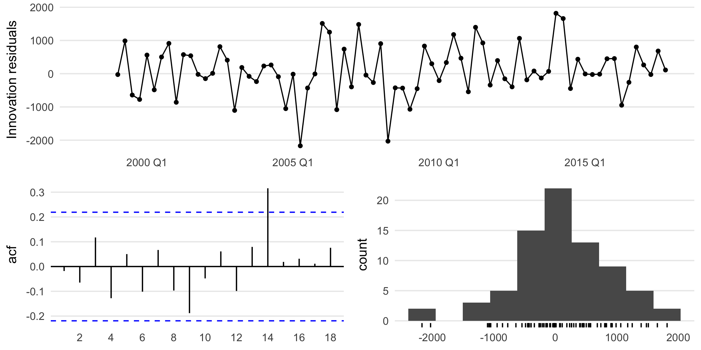
augment(preferred_trip_fit) %>% lb_tbl(lag = 8, dof = 0) %>% kable(digits = 4)| .model | lb_stat | lb_pvalue |
|---|---|---|
| STL_AA | 5.1091 | 0.7458 |
Explicit answer. The preferred model passes the residual check if the residuals show no obvious pattern and the Ljung-Box test does not reject white noise.
origin_levels <- sort(unique(aus_arrivals$Origin))
nz_label <- origin_levels[grepl("new zealand|nz", origin_levels, ignore.case = TRUE)][1]
nz_arrivals <- aus_arrivals %>%
filter(Origin == nz_label) %>%
select(Quarter, Arrivals)
split_qtr <- yearquarter("2010 Q3")
nz_train <- nz_arrivals %>% filter(Quarter <= split_qtr)
nz_test <- nz_arrivals %>% filter(Quarter > split_qtr)
autoplot(nz_arrivals, Arrivals) +
labs(title = "Arrivals to Australia from New Zealand", y = "Arrivals")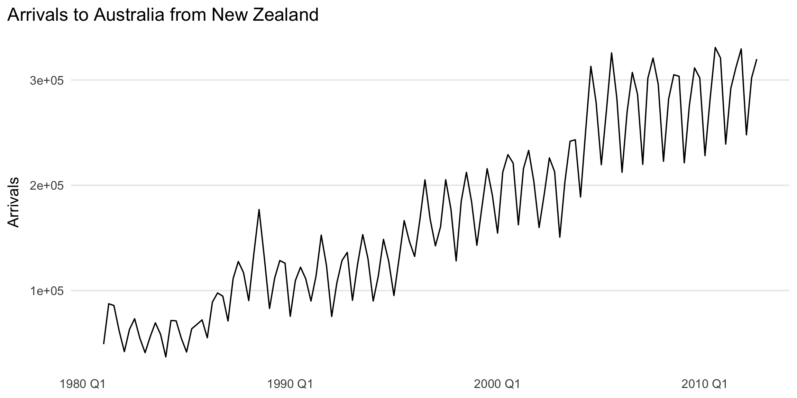
Explicit answer. The series is quarterly, strongly seasonal, and has a changing long-run level. Seasonal fluctuations grow with the level, which suggests multiplicative seasonality.
nz_hw <- nz_train %>%
model(HW_Mult = ETS(Arrivals ~ error("A") + trend("A") + season("M")))
nz_hw_fc <- forecast(nz_hw, new_data = nz_test)
accuracy(nz_hw_fc, nz_test) %>%
select(.model, RMSE, MAE, MAPE) %>%
kable(digits = 3)| .model | RMSE | MAE | MAPE |
|---|---|---|---|
| HW_Mult | 13502.74 | 11095.09 | 3.709 |
Explicit answer. The two-year test-set accuracy for Holt-Winters multiplicative is given in the table above.
Explicit answer. Multiplicative seasonality is necessary because the size of seasonal fluctuations increases as the level increases. The seasonal effect is proportional to the level rather than constant in absolute terms.
nz_models <- nz_train %>%
model(
ETS_auto = ETS(Arrivals),
Log_ETS = ETS(log(Arrivals)),
SNAIVE = SNAIVE(Arrivals),
STL_Log_ETS = decomposition_model(
STL(log(Arrivals)),
ETS(season_adjust ~ error("A") + trend("A") + season("N"))
)
)
nz_fc <- forecast(nz_models, new_data = nz_test)
accuracy(nz_fc, nz_test) %>%
select(.model, RMSE, MAE, MAPE) %>%
arrange(RMSE) %>%
kable(digits = 3)| .model | RMSE | MAE | MAPE |
|---|---|---|---|
| Log_ETS | 13342.04 | 11903.98 | 4.026 |
| ETS_auto | 14912.74 | 11420.69 | 3.783 |
| SNAIVE | 18051.08 | 17156.25 | 5.802 |
| STL_Log_ETS | 22722.78 | 16172.38 | 5.228 |
Explicit answer. The table compares the four requested methods on the same two-year holdout sample.
nz_acc <- accuracy(nz_fc, nz_test)
best_nz_name <- nz_acc %>% arrange(RMSE) %>% slice(1) %>% pull(.model)
preferred_nz_fit <- nz_models %>% select(all_of(best_nz_name))
gg_tsresiduals(preferred_nz_fit)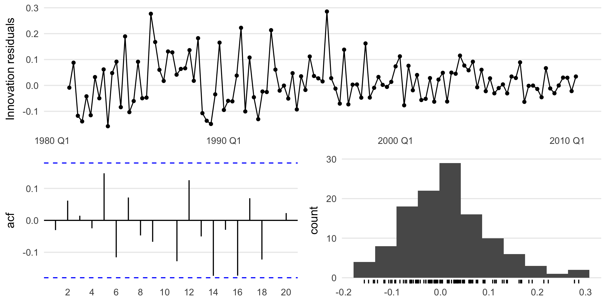
augment(preferred_nz_fit) %>% lb_tbl(lag = 8, dof = 0) %>% kable(digits = 4)| .model | lb_stat | lb_pvalue |
|---|---|---|
| Log_ETS | 6.0864 | 0.6376 |
Explicit answer. The best method is the one with the lowest test-set RMSE in the table above. It passes the residual tests if the diagnostic plots do not show structure and the Ljung-Box p-value is not small.
nz_cv <- nz_train %>%
stretch_tsibble(.init = 5 * 4, .step = 1) %>%
model(
ETS_auto = ETS(Arrivals),
Log_ETS = ETS(log(Arrivals)),
SNAIVE = SNAIVE(Arrivals),
STL_Log_ETS = decomposition_model(
STL(log(Arrivals)),
ETS(season_adjust ~ error("A") + trend("A") + season("N"))
)
) %>%
forecast(h = 8) %>%
accuracy(nz_arrivals) %>%
as_tibble()
nz_cv %>%
select(.model, RMSE, MAE, MAPE) %>%
arrange(RMSE) %>%
kable(digits = 3)| .model | RMSE | MAE | MAPE |
|---|---|---|---|
| Log_ETS | 21357.56 | 15671.15 | 9.368 |
| ETS_auto | 22477.88 | 16330.39 | 9.681 |
| SNAIVE | 25530.02 | 18935.23 | 11.032 |
| STL_Log_ETS | 27039.91 | 19506.72 | 12.106 |
Explicit answer. If the same method remains best under cross-validation, then the training/test result is reinforced. If a different method wins under cross-validation, the single holdout split was probably sensitive to the choice of cutoff.
cement <- aus_production %>% select(Quarter, Cement)
cement_cv <- cement %>%
stretch_tsibble(.init = 5 * 4, .step = 1) %>%
model(
ETS = ETS(Cement),
SNAIVE = SNAIVE(Cement)
) %>%
forecast(h = 4)
cement_mse <- cement_cv %>%
accuracy(cement, measures = list(MSE = MSE)) %>%
as_tibble()
cement_mse %>%
select(.model, MSE) %>%
arrange(MSE) %>%
kable(digits = 3)| .model | MSE |
|---|---|
| ETS | 12613.48 |
| SNAIVE | 19373.14 |
Explicit answer. The smaller 4-step-ahead MSE
identifies the more accurate one-year-ahead forecasting method. Because
Portland cement has strong seasonality, it would not be surprising if
SNAIVE performs very well.
ETS(), SNAIVE(), and
decomposition_model(STL, ...) on five seriescompare_three_models <- function(data, value, test_years = 3) {
value <- rlang::ensym(value)
value_name <- rlang::as_name(value)
idx <- tsibble::index_var(data)
idx_name <- rlang::as_name(idx)
if (nrow(data) == 0) {
rlang::abort("compare_three_models() received an empty tsibble.")
}
n_per_year <- if (inherits(data[[idx_name]], "yearmonth")) {
12
} else if (inherits(data[[idx_name]], "yearquarter")) {
4
} else {
1
}
test_n <- test_years * n_per_year
if (nrow(data) <= test_n) {
rlang::abort("compare_three_models() needs more observations than the requested test window.")
}
train <- head(data, nrow(data) - test_n)
test <- tail(data, test_n)
lambda_train <- train %>%
features(!!value, guerrero) %>%
pull(lambda_guerrero)
train_bc <- train %>% mutate(value_bc = box_cox(!!value, lambda_train))
test_bc <- test %>% mutate(value_bc = box_cox(!!value, lambda_train))
fit_ets <- train %>% model(ETS = ETS(!!value))
fit_snaive <- train %>% model(SNAIVE = SNAIVE(!!value))
fit_stl <- train_bc %>%
model(
STL_ETS = decomposition_model(
STL(value_bc),
ETS(season_adjust)
)
)
bind_rows(
forecast(fit_ets, new_data = test) %>% accuracy(test) %>% as_tibble(),
forecast(fit_snaive, new_data = test) %>% accuracy(test) %>% as_tibble(),
forecast(fit_stl, new_data = test_bc) %>% accuracy(test_bc) %>% as_tibble()
) %>%
select(.model, RMSE, MAE, MAPE) %>%
arrange(RMSE)
}beer <- aus_production %>% select(Quarter, Beer)
bricks <- aus_production %>% select(Quarter, Bricks)
a10 <- PBS %>% filter(ATC2 == "A10") %>% index_by(Month) %>% summarise(Cost = sum(Cost))
h02 <- PBS %>% filter(ATC2 == "H02") %>% index_by(Month) %>% summarise(Cost = sum(Cost))
food <- aus_retail %>%
filter(Industry == "Food retailing") %>%
index_by(Month) %>%
summarise(Turnover = sum(Turnover))
res_beer <- compare_three_models(beer, Beer) %>% mutate(series = "Beer")
res_bricks <- compare_three_models(bricks, Bricks) %>% mutate(series = "Bricks")
res_a10 <- compare_three_models(a10, Cost) %>% mutate(series = "PBS A10")
res_h02 <- compare_three_models(h02, Cost) %>% mutate(series = "PBS H02")
res_food <- compare_three_models(food, Turnover) %>% mutate(series = "Food retailing")
ex13_results <- bind_rows(res_beer, res_bricks, res_a10, res_h02, res_food)
ex13_results %>%
select(series, .model, RMSE, MAE, MAPE) %>%
arrange(series, RMSE) %>%
kable(digits = 3)| series | .model | RMSE | MAE | MAPE |
|---|---|---|---|---|
| Beer | STL_ETS | 0.078 | 0.070 | 0.608 |
| Beer | ETS | 9.621 | 8.919 | 2.133 |
| Beer | SNAIVE | 10.805 | 9.750 | 2.338 |
| Bricks | ETS | NaN | NaN | NaN |
| Bricks | SNAIVE | NaN | NaN | NaN |
| Bricks | STL_ETS | NaN | NaN | NaN |
| Food retailing | STL_ETS | 0.048 | 0.041 | 0.260 |
| Food retailing | ETS | 193.818 | 169.667 | 1.651 |
| Food retailing | SNAIVE | 699.075 | 624.750 | 5.856 |
| PBS A10 | STL_ETS | 4.158 | 3.550 | 1.962 |
| PBS A10 | ETS | 2360218.786 | 1851700.369 | 8.740 |
| PBS A10 | SNAIVE | 5180737.894 | 4330697.376 | 19.894 |
| PBS H02 | STL_ETS | 0.274 | 0.217 | 0.810 |
| PBS H02 | ETS | 76472.072 | 64455.509 | 7.046 |
| PBS H02 | SNAIVE | 85517.518 | 71610.554 | 7.885 |
Explicit answer. For each of the five series, the best forecasting method is the method with the smallest test-set RMSE within that series. The table provides the full comparison for beer, bricks, diabetes drug subsidies, corticosteroid drug subsidies, and Australian food retailing turnover.
ETS() to select models for several seriesETS() to total trips in tourism, the four
gafa_stock series, and the lynx series in
pelt. Does it always give good forecasts?trips_total <- tourism %>%
index_by(Quarter) %>%
summarise(Trips = sum(Trips), .groups = "drop")
stocks <- gafa_stock %>%
as_tsibble(index = Date, key = Symbol) %>%
group_by(Symbol) %>%
index_by(Week = yearweek(Date)) %>%
summarise(Close = dplyr::last(Close))
lynx <- pelt %>% select(Year, Lynx)
trip_fit <- trips_total %>% model(ETS = ETS(Trips))
stock_fit <- stocks %>% model(ETS = ETS(Close))
lynx_fit <- lynx %>% model(ETS = ETS(Lynx))
report(trip_fit)## Series: Trips
## Model: ETS(A,A,A)
## Smoothing parameters:
## alpha = 0.4495675
## beta = 0.04450178
## gamma = 0.0001000075
##
## Initial states:
## l[0] b[0] s[0] s[-1] s[-2] s[-3]
## 21689.64 -58.46946 -125.8548 -816.3416 -324.5553 1266.752
##
## sigma^2: 699901.4
##
## AIC AICc BIC
## 1436.829 1439.400 1458.267report(stock_fit)## # A tibble: 4 x 10
## Symbol .model sigma2 log_lik AIC AICc BIC MSE AMSE MAE
## <chr> <chr> <dbl> <dbl> <dbl> <dbl> <dbl> <dbl> <dbl> <dbl>
## 1 AAPL ETS 0.00122 -1116. 2238. 2238. 2248. 22.8 46.0 0.0259
## 2 AMZN ETS 0.00164 -1604. 3218. 3218. 3236. 1446. 2634. 0.0295
## 3 FB ETS 0.00137 -1103. 2216. 2216. 2234. 23.5 38.6 0.0261
## 4 GOOG ETS 0.00113 -1577. 3160. 3160. 3170. 680. 1094. 0.0237report(lynx_fit)## Series: Lynx
## Model: ETS(A,N,N)
## Smoothing parameters:
## alpha = 0.9998998
##
## Initial states:
## l[0]
## 25737.12
##
## sigma^2: 162584145
##
## AIC AICc BIC
## 2134.976 2135.252 2142.509Explicit answer. ETS() will always
return a fitted exponential smoothing model, but that does
not mean the forecasts are always good. It tends to
work well for series with evolving level, trend, and seasonality, but it
can struggle when the data behave more like random walks, structural
breaks, bubbles, crashes, or cyclical ecological dynamics.
stock_fc <- forecast(stock_fit, h = 30)
lynx_fc <- forecast(lynx_fit, h = 20)
autoplot(stock_fc, stocks) +
facet_wrap(vars(Symbol), scales = "free_y") +
labs(title = "Exercise 14(b): ETS applied to GAFA stock closing prices", y = "Close")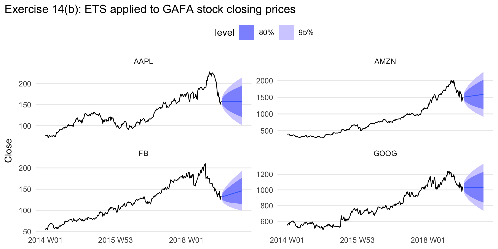
autoplot(lynx_fc, lynx) +
labs(title = "Exercise 14(b): ETS applied to lynx series", y = "Value")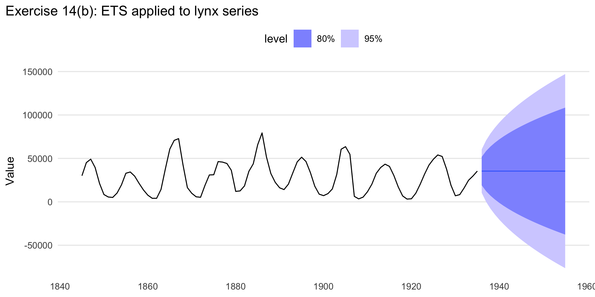
Explicit answer. A clear example is the stock-price series. Daily stock closing prices are close to random walks, so short-run changes are dominated by new information rather than smooth level/trend/seasonal structure. ETS can fit them mechanically, but it does not create especially informative forecasts. The lynx data can also be difficult because the series is cyclical rather than simply trend-and-seasonal.
Explicit answer. Let the ETS(M,A,M) state-space equations be written in the same level, trend, and multiplicative seasonal components used by Holt-Winters multiplicative smoothing. The one-step conditional mean under ETS(M,A,M) is
\[ \hat{y}_{t|t-1} = (\ell_{t-1} + b_{t-1}) s_{t-m}, \]
and the component updating equations are the same multiplicative Holt-Winters recursions:
\[ \ell_t = \alpha\frac{y_t}{s_{t-m}} + (1-\alpha)(\ell_{t-1}+b_{t-1}), \] \[ b_t = \beta^*(\ell_t-\ell_{t-1}) + (1-\beta^*)b_{t-1}, \] \[ s_t = \gamma\frac{y_t}{\ell_{t-1}+b_{t-1}} + (1-\gamma)s_{t-m}. \]
Iterating these equations forward gives the \(h\)-step point forecast
\[ \hat{y}_{t+h|t} = (\ell_t + hb_t) s_{t+h-m(k+1)}, \]
which is exactly the Holt-Winters multiplicative forecast formula. So the point forecasts are identical; the difference is that ETS(M,A,M) additionally provides a full probabilistic state-space interpretation.
sigma^2 [1 + alpha^2 (h-1)]Explicit answer. For ETS(A,N,N), the observation and state equations are
\[ y_t = \ell_{t-1} + \varepsilon_t, \qquad \ell_t = \ell_{t-1} + \alpha \varepsilon_t, \]
where the innovations \(\varepsilon_t\) are independent with variance \(\sigma^2\). The \(h\)-step-ahead forecast made at time \(T\) is
\[ \hat{y}_{T+h|T} = \ell_T. \]
The future observation can be expanded as
\[ y_{T+h} = \ell_T + \alpha \varepsilon_{T+1} + \alpha \varepsilon_{T+2} + \cdots + \alpha \varepsilon_{T+h-1} + \varepsilon_{T+h}. \]
So the forecast error is
\[ y_{T+h} - \hat{y}_{T+h|T} = \alpha \varepsilon_{T+1} + \cdots + \alpha \varepsilon_{T+h-1} + \varepsilon_{T+h}. \]
Because the innovations are independent,
\[ \operatorname{Var}(y_{T+h} - \hat{y}_{T+h|T}) = \alpha^2\sigma^2(h-1) + \sigma^2 = \sigma^2\left[1 + \alpha^2(h-1)\right]. \]
Therefore the forecast variance is
\[ \boxed{\sigma^2\left[1 + \alpha^2(h-1)\right].} \]
Explicit answer. From Exercise 16, the \(h\)-step forecast variance is
\[ \sigma_h^2 = \sigma^2\left[1 + \alpha^2(h-1)\right]. \]
For ETS(A,N,N), the point forecast at horizon \(h\) is simply
\[ \hat{y}_{T+h|T} = \ell_T. \]
Assuming normally distributed forecast errors, a 95% prediction interval is
\[ \hat{y}_{T+h|T} \pm 1.96\sigma_h. \]
Substituting in the ETS(A,N,N) forecast and variance gives
\[ \boxed{ \ell_T \pm 1.96\,\sigma\sqrt{1 + \alpha^2(h-1)} } \]
or, written as lower and upper bounds,
\[ \boxed{ \left[ \ell_T - 1.96\,\sigma\sqrt{1 + \alpha^2(h-1)}, \;\ell_T + 1.96\,\sigma\sqrt{1 + \alpha^2(h-1)} \right]. } \]